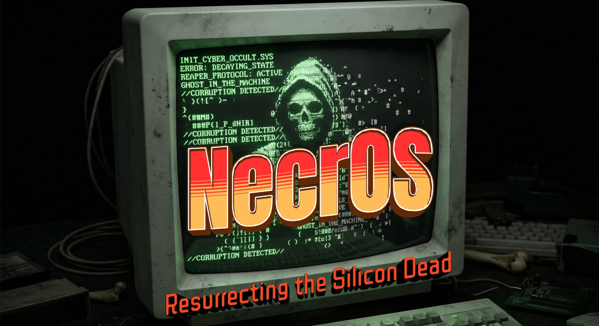

Le Kali du 32-bits
Un OS de pentest ultra-léger basé sur Alpine Linux.
Conçu pour faire revivre les vieilles machines.
| NecrOS | Kali | Parrot | BlackArch | |
|---|---|---|---|---|
| RAM minimum | 256 MB | 2 GB | 1 GB | 1 GB |
| Disque minimum | 500 MB | 20 GB | 16 GB | 20 GB |
| Support x86 32-bit | Natif | Abandonné | Limité | Non |
| Base | Alpine (musl) | Debian | Debian | Arch |
| Init system | OpenRC | systemd | systemd | systemd |
| Installation modulaire | Oui (toolboxes) | Monolithique | Monolithique | AUR |
Open source. Communautaire. Pour les morts-vivants du silicium.